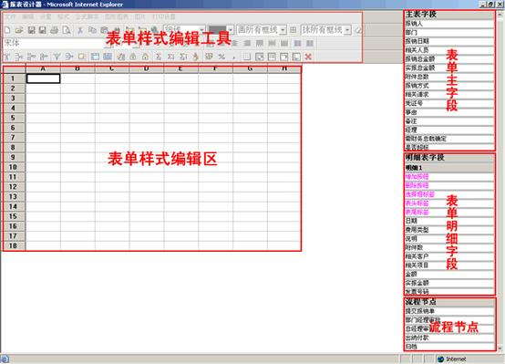
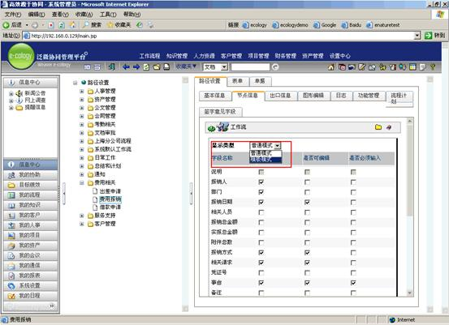
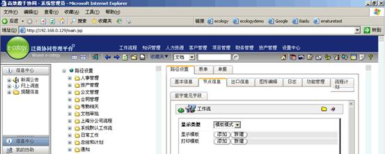
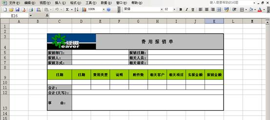
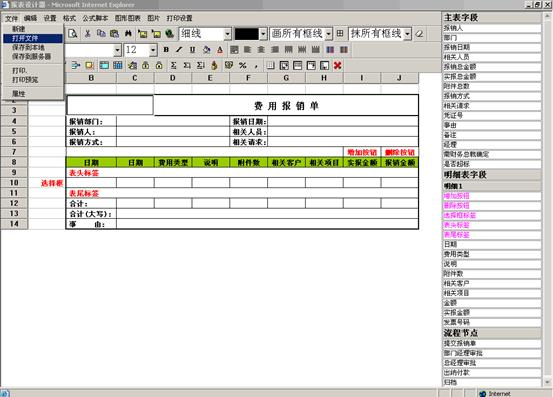
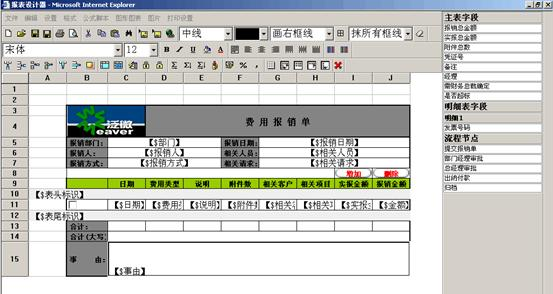
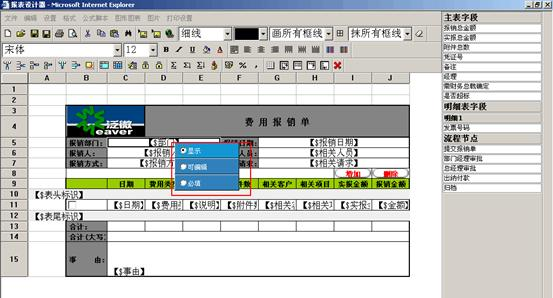
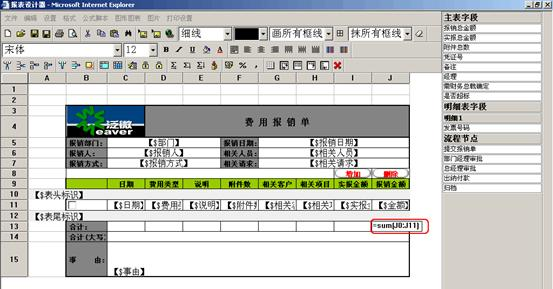

目录
e-cology系统中提供了流程表单模板编辑工具――报表设计器。通过报表设计器可以将系统中流程的表单显示或打印样式根据企业的需求进行设计。一方面让系统流程表单显示更加美化，另一方面让流程表单的表现样式符合企业用户使用习惯。
报表设计器的作用是设计系统流程表单显示样式和打印样式。在系统中使用报表设计器是在流程表单、流程路径都设置完成的基础上来设置所需要的流程表单表现样式。
系统中表单模板分为显示模板和打印模板，显示模板用于用户在系统中处理流程时所显示的样式，打印模板用于用户在某个节点打印流程表单时所显示的样式。在一个流程中每个节点的显示模板和打印模板需要分别设置，也就是说一个流程的每个节点都可以设置不同的显示样式或者打印样式。
显示模板和打印模板和打印模板的设置方法相同，以下为流程表单模板编辑工具――报表设计器的操作界面。

1、 表单主字段：系统中你设置的当前表单主字段。
2、 表单明细字段：系统中你设置的当前表单明细字段，当有多个明细字段时按“明细1”、“明细2”……分别显示。在明细字段中以红色显示的为表单必须功能项，在每个明细表中都必须使用到。
Ø 增加按钮：用于添加明细表的输入行；
Ø 删除按钮：用于删除明细表的输入行；
Ø 选择框标签：用于选择需要删除的明细表的输入行；
Ø 表头标签：用于表示一个明细表的开始，当有多个明细表时每个明细都需要设置表头标签；
Ø 表尾标签：用于表示一个明细表的结束，当有多个明细表时每个明细都需要设置表尾标签；
说明：因为明细表示可以添加多行的，在设置表单模板时无法固定行数就是以表头标签和表尾标签来告诉系统当点击添加时在这个行范围内增加行。
3、 流程节点：当前流程所设置的节点，用于在表单上显示出节点操作人处理流程时在签字栏中输入的审批意见。这部分只有在流程节点中设置表单样式时会显示，如果在表中设置中直接设置显示/打印样式将不显示内容。
4、 表单样式编辑区：表单样式编辑区，在设置设置表单样式。
5、 表单样式编辑工具：在编辑表单样式时可以使用的一些工具，可以设置字体、颜色、图片等样式。
1、 在设计标单模板前，需要在系统中将流程表单设置好，也就是表单的普通模式已经设置完成的基础上才能设置表单的显示和打印模板。
在流程路径设置中选择需要设置表单模板样式的工作流，进入流程“节点信息”中，点击要设置表单模板样式节点的“节点表单字段”

系统默认的表单显示类型都为“普通模式”，通过下拉菜单将显示类型选择为“模板模式”

根据需要设置显示模板或打印模板，“添加”用于将已经存在的模板添加到当前节点，系统会自动以一个新的模板保存到当前节点，添加并保存后您可以在添加的模板基础上修改，这个修改不会影响所选择的模板而只是修改系统自动保存的新模板。“新建”用于在当前节点新建表单模板。

2、 在设置表单模板前需要设计出你所需要的样式，可以在Excel中按照需要设计出表单的样式，也可以直接在报表设计器中直接设计。我们以费用报销单为例，先在Excel中画出所需要的表单样式（见下图）：

因为这个表单是有明细表的，所以我们还要设计出明细表必须功能项的放置位置，如下图：

3、 当所需要的表单样式设计好以后，可以在报表设计器中通过Excel文件导入模板样式：
（见下图）

4、 这个时候我们所需要做的是将导入到报表设计器中的模板进行编辑，因为报表设计器和Excel为不同的软件，从Excel中导入的样式肯定会存在一些设计样式丢失或改变，如字体、颜色等。
5、 编辑完成后将表单字段插入到模板中设计好的输入单元格中，如下图：

设置方法为先选择字段所在的单元格，然后点击右边相应的字段，则将所选自动放置到表单中相应的位置，对于明细表中的必须功能项和流程节点也是相同的操作。
6、 当设置完成后需要社长这些表单字段的编辑属性，在某个字段上点击右键会出现“显示”、“可编辑”、“必填”选择，用于设置当前节点操作人（因为表单是在节点上设置的）这些字段是否可以编辑或必须编辑。

7、 到此我们的表单模板也就设置完成了，点击文件菜单下的“保存到服务器”既可将这个模板保存到系统中，下面可以根据需要设置打印模板或者其他节点的模板。
接下来我们看一下表单设置中的公式设置功能，利用报表设计器的单元变参功能我们可以设置一些单元格的计算公式，以实现特殊需求。如下图中的报销金额合计数就可以使用公式=SUM（J0:J11）自动计算出来。关于单元变参相信说明请参考第六部分单元变参说明。
我们所需要注意的是这些公式的设置和就计算结果仅用于表单上显示，对于系统流程和数据没有任何关系，不能用户系统的统计和流程出口判断。如下图我们利用单元变参计算出来的报销金额合计只能用于在表单上的显示，这些数据是不会进入系统数据库的。
如果需要计算结果能进行统计，请在流程表单中利用附加条件、行计算规则和列计算规则进行设置。即将需要计算的结果作用普通模式时表单中的一个字段，并利用系统所带计算功能设置。

(一) 文件功能
1、 新建：创建一个新的报表文件。
2、 打开文件：打开一个已有的报表文件，在这里可以打开以前保存在本地的模板文件或者打开一个Excel文件，导入Excel文件中的表单样式。
3、 模版格式检查：可以检查模版中字段是否有效，特殊标识“增加、删除、选择框标签、表头标识、表尾标识”是否配对。
4、 保存到本地：将编辑的报表文件作为本地文件保存，已tab格式文件保存，保存后可以再次打开编辑。
5、 保存到服务器：将编辑好的模板文件保存到系统中，只有保存到系统中的模板才能在流程中使用。
6、 打印：打印当前设置的报表文件。
7、 打印预览：打印预览当前设置的报表文件。
8、 属性：查看或编辑这个报表文件的属性。
(二) 编辑功能
1、 拷贝：拷贝选中的内容到剪切板。
2、 剪切：剪切选中的内容到剪切板。
3、 粘贴：把剪切板的内容粘贴到报表之中。
4、 单元定位：通过弹出对话框，可以选择光标跳到指定的单元或指定的行列。
5、 插入行：下级菜单中的“前插行”是在当前活动单元前插入行；“后插行”是在当前活动单元后插入行；“插入格式行”通过弹出对话框可以把指定行区域的内容和格式插入到新的指定行区域；“拷贝格式行”通过弹出对话框可以把指定行区域的内容和格式拷贝到新的指定行区域。
6、 插入列：下级菜单中的“前插列”是在当前活动单元前插入列；“后插列”是在当前活动单元后插入列；“插入格式列”通过弹出对话框可以把指定行区域的内容和格式插入到新的指定列区域；“拷贝格式列”通过弹出对话框可以把指定列区域的内容和格式拷贝到新的指定列区域。
7、 插入单元：下级菜单中的“插入单元”是弹出插入单元对话框，选择对应的选项后进行单元插入操作；“插入单元后下移”是指在当前选中区域块中插入单元后原区域的单元往下移动；“插入单元后右移”是把指在当前选中区域块中插入单元后原区域的单元往右移动。
8、 清除单元：下级菜单中的“清除单元所有内容”用于将活动单元内的内容全部清除；“清除单元文字”用于将活动单元内的文字清除。
9、 删除行：删除活动单元行。
10、 删除列：删除活动单元列。
11、 删除单元：下级菜单中的“删除单元”是弹出删除单元对话框，选择对应的选项后进行单元删除操作；“删除单元后左移”是指删除单元当前选中区域的单元后，右边的单元往左移；“删除单元后上移”是指删除当前选中区域的单元后，下面的单元往上移。
12、 按活动单元行排序：下级菜单中的“选中区域升序”是对选中区域按列进行升序排序；“选中区域降序”是对选中区域按列进行降序排序；“升序-整行交换”是对选中区域的行按列进行升序排序,也就是说在排序的时候是整行交换；“降序-整行交换”是对选中区域的行按列进行降序排序,也就是说在排序的时候是整行交换 。
13、 按活动单元列排序：下级菜单中的“选中区域升序”是对选中区域按行进行升序排序；“选中区域降序”是对选中区域按行进行降序排序；“升序-整列交换”是对选中区域的列按行进行升序排序,也就是说在排序的时候是整列交换；“降序-整列交换”是对选中区域的列按行进行降序排序,也就是说在排序的时候是整列交换 。
(三) 设置功能
1、 表格行列数：设置表格的最大行数和列数，如果行数或列数小于当前已有的行数或列数，则超出的行数或列数会被删除。
2、 页面背景色：通过弹出对话框设置表格页面的背景色。
3、 设置系统表格线型：通过弹出对话框设置系统表格线的颜色和线型。
4、 设置单元保护或隐藏：弹出对话框，设置或取消当前活动区域块的单元格隐藏或保护，保护后就不能修改单元格内容。该设置对插入了表单字段的单元格不起作用。
5、 设置行高自动调整：设置行高是否能够自动调整，如果该菜单项打勾，则表示行高能够自动调整。设置行高自动调整的操作后只对以后输入文字的行有用。
6、 按回车光标自动跳转方向：下级菜单中的“跳到下一列”，如果该菜单项打勾，则表示按回车跳到下一列。“跳到下一行”，如果该菜单项打勾，则表示按回车跳到下一行。
7、 头尾单元跳转时自动换行或列：如果该菜单项打勾，则表示光标在头尾单元时，会自动换到下一行或列或者上一行或列。
8、 在按键时跳过该单元：设置或取消当按回车在单元格间跳转时遇到选中区域单元是否在按回车键时跳过。如果该菜单项打勾，则表示当前活动单元会在按键时跳过。
9、 计算时显示错误提示：设置或取消选是否在计算的时候显示错误提示窗口。如果该菜单项打勾，则表示在计算时显示错误提示。
10、 设计模式：设置或取消报表设计模式。如果该菜单项打勾，则表示报表处于设计模式。
11、 显示行列头：设置或取消报表行列头的显示。如果该菜单项打勾，则表示报表显示行列头。
12、 显示表格线：设置或取消报表表格线的显示。如果该菜单项打勾，则表示报表显示行列头。
13、 整表单元保护：设置或取消报表整表单元保护。如果该菜单项打勾，则表示整个报表单元被保护。
14、 整表单元保护时出现光标：设置是否在报表整表单元保护时出现光标。如果该菜单项打勾，则表示整表单元保护时出现光标。
15、 是否显示弹出菜单：设置是否显示右键弹出菜单。如果该菜单项打勾，则点击右键时可以出现右键菜单。
16、 允许鼠标对行高进行调整：设置是否允许鼠标对行高进行调整。如果该菜单项打勾，则允许鼠标对行高进行调整。
17、 允许鼠标对列宽进行调整：设置是否允许鼠标对列宽进行调整。如果该菜单项打勾，则允许鼠标对列宽进行调整。
18、 双击表头自动排序：设置是否允许双击表头时自动按双击的列进行排序。如果该菜单项打勾，则表示允许。
(四) 格式功能
1、 单元内文字显示间距：通过弹出对话框来设置活动单元格内显示文字的上间距、下间距、左间距、右间距、行间距、字间距。
2、 单元控件类型：置各种单元控件类型。可以设置单选框、下拉框、复合单元、日期时间输入控件、超级链接、数字输入等控件，可以通过删除控件类型来删除控件。该设置对插入了表单字段的单元格不起作用。
3、 财务格式类型：设置各种财务格式类型。可以设置财务表头、财务表览、财务大写和删除财务类型等功能。
4、 设置单元为3D形状：设置或取消选中的单元区域为3D形状，3D形状与表头的形状完全一样。如果要设置自己的行表头，并且表头形状和系统表头一样，就可以使用这个功能来设置。该设置对插入了表单字段的单元格不起作用。
5、 线形设置：通过弹出对话框，设置当前活动区域块单元格的线型。
6、 数据绑定单元文字颜色、背景颜色：通过弹出对话框对选中区域设置单元数据绑定背景颜色和文字颜色。根据设定可以以不同的字体颜色和单元格背景色来显示数据。该设置对插入了表单字段的单元格不起作用。
7、 单元数字显示格式：通过弹出对话框，设置当前活动区域块的单元格显示格式。该设置对插入了表单字段的单元格不起作用。
8、 表行：下级菜单中的“行高”是弹出对话框设置选中区域的行高；“隐藏”是对选中区域行隐藏不显示；“取消隐藏”是对选中区域行不隐藏；“最适合的行高”是调整指定区域内行高为最适合的行高；“自动调整高度太小的行高”是调整指定区域内行高太小的行为最适合的行高，行高大于最适合的行高的行不做调整。
9、 表列：下级菜单中的“列宽”是弹出对话框设置选中区域的列宽。“隐藏”是对选中区域列隐藏不显示。“取消隐藏”是对选中区域列不隐藏。“最适合的列宽”是调整指定区域内列宽为最适合的列宽。“自动调整高度太小的列宽”是调整指定区域内列宽太小的列为最适合的列宽，列宽大于最适合的列宽的列不做调整。
10、 单元组合：组合当前选中区域的单元格。
11、 单元取消组合：取消当前选中区域的已组合的单元格。
12、 斜线设置：通过弹出对话框，在当前活动区域块单元格中画斜线。
13、 缺省设置：通过弹出对话框，设置当前表格的缺省行高、列宽、字体、对齐方式、数字显示格式等。表格中没有调整过行高和列宽的行或列、没有设置过字体、对齐方式、数字显示格式的单元按缺省值显示。
(五) 公式脚本
1、 函数列表：显示函数列表对话框，它是在报表中设置公式时用到的函数 。
2、 求和：下级菜单中的“纵向求和”是纵向对选中区域的单元求和；“横向求和”是横向对选中区域的单元求和；“双向求和”是对选中区域进行双向求和。该设置对插入了表单字段的单元格不起作用。
3、 整表计算：对整表所有公式全部进行计算。
(六) 图形图表
1、 图表向导：通过该向导在表格中插入柱状图、饼状图、线形图等图表。
2、 画线：使用该工具在表格中点击鼠标可以进行线条的绘制。
3、 画矩形：使用该工具在表格中点击鼠标可以进行矩形的绘制。
4、 画圆角矩形：使用该工具在表格中点击鼠标可以进行圆角矩形的绘制。
5、 画椭圆：使用该工具在表格中点击鼠标可以进行椭圆的绘制。
6、 边框颜色：设置选中图形的边框颜色进行设置，所设置图形是通过上述工具所绘制的图形。
7、 填充颜色：设置选中图形的填充颜色进行设置，所设置图形是通过上述工具所绘制的图形。
8、 移到最顶层：将选择对象移到最上层，所设置对象是通过上述工具所绘制的图形。
9、 移到最底层：将选择对象移到最底层，所设置对象是通过上述工具所绘制的图形。
10、 移到上一层：将选择对象移到上移一层，所设置对象是通过上述工具所绘制的图形。
11、 移到下一层：将选择对象移到下移一层，所设置对象是通过上述工具所绘制的图形。
12、 刷新所有图表：对整个报表内的所有图表对象进行刷新。
(七) 图片功能
1、 在表格上放置图片：弹出选择图片文件对话框，插入图片对象，图片放置在表格上面。
2、 在单元中插入图片：弹出选择图片文件对话框，插入图片对象，图片放置在表格活动单元中。
3、 设置单元中图片大小：设置通过单元中插入图片功能的图片对象的大小，有两种，一种按图片原始大小，另一种是按单元格大小。
4、 删除单元中图片：删除在单元格中插入的图片。
5、 插入背景图片：弹出选择图片文件对话框在整个报表中插入背景图片，背景图片的大小有两种，一种按图片原始大小，另一种是按表格大小插入。
6、 设置背景图片：改变报表中插入背景图片大小，有两种方式一种按图片原始大小，另一种是按表格大小。
7、 删除背景图片：删除插入的报表背景图片。
(八) 打印设置功能
1、 设置/取消每页打印的行表头：设置选定的行为行表头，在打印时从第一行开始到选定的行作为行表头，行表头在打印中每页都会显示。
2、 设置/取消每页打印的列表头：设置选定的列为列表头，在打印时从第一列开始到选定的列作为列表头，列表头在打印中每页都会显示。
3、 设置打印页前脚行数：设置页前脚的行数，设置为页前脚的行将在打印或打印预览时在每页的数据后面显示。
4、 设置打印页脚行数：设置页脚的行数，设置为页脚的行将在打印或打印预览时在每页的数据后面显示。
5、 设置打印每页行数：设置每页打印的行数，不包括表头、表尾页脚、页前脚的行数。
6、 页面设置：当前表格打印页面设置，包括页边距、页眉页脚、打印尺寸、硬分页设置等。
7、 打印设置：设置纸张大小或选择打印机。
8、 设置不打印单元格：设置选中区域的单元格在打印时是否显示。
9、 设置只打印单元格文字：设置选中区域的单元格在打印时是否只打印文字。默认所有的单元格在打印时会打印所有的内容。如果要不打印某些单元格的背景、线形，则需要调用此函数。 此功能只有在选中区域的单元被打印时才起作用。
10、 设置打印表格背景：设置是否打印表格背景，设置背景不打印时将不打印背景图片和背景颜色。
(九) 帮助功能
1、 本机版本：获得用户当前机器的设计器版本。
2、 服务器版本：获得ecology服务器的设计器版本。
3、 使用帮助：使用帮助。
1、输入框使用时必须输入完后按回车或者鼠标左键点击到其它单元格上，此次的输入内容才会起效。
现在发生的问题：用户输入内容后直接点击右健提交，提交后该内容为空。
2、浏览框使用时点击浏览图标后，需等浏览框出来后才移动鼠标至浏览框，否则容易出现浏览框变小现象（系统慢时）。
现发生的问题：浏览框变小，无法进行选择
3、模版设计使用注意问题
a) 禁止对选择进来的字段进行复制、粘贴操作
b) 禁止通过键盘的delete进行删除选择进来的字段,需要用模版上的”X”来清除
c) 修改了表单的字段类型和改变了字段,需要对引用到该字段的模版进行修改
d) 有明细时应注意“表头标识”和“表尾标识”必须在“选择框标签”上和下，中间不能有空白行，如果明细字段有多行时，“选择框标签”必须为明细行数的合并行
4、使用小诀窍
a) 删除字段时可以用鼠标拖动选择一个区域的字段点“X”进行清除
b) 字段替换功能，例如某个字段选择错了，或者需要放别的字段，不需要先删除再添加，可以选中设计表单中的这个字段，然后从右边列表中选择需要替换成的字段即可
c) 对于表单线条，和字体样式，格式等都可以选择区域，对这个区域进行设置
d) 设置模版时可以先在excle中设计好后，用模版打开，直接加入字段即可。
e) 如果流程中各节点的模版样式都基本一样，建议在表单上建立表单模版，在各节点上选择表单模版后，再进行简单修改，这样减少很多工作量。
单元变参对于数据库函数中某一列的值进行求和非常方便。由于数据库函数的执行的结果返回的行数不固定，
这样用单元变参就非常方便的对变动的行进行求和
表示方法1
单元变参的表示方法是以列标+0表示，如A0，B0，C0。
其中列标表示该单元变参所在的列，0表示当前单元变参所在行的前一行。当有行增删时，这个值也会随行的
增删的变化而变化。
举例说明
如在B5单元中有公式"=A0"，则该变参表示的值应该是第四行A4的单元值，如果在第5行前插入了3行，则B8中
该公式的值变为第七行A7的单元值。
如在B3单元中有公式"=sum(B2:B0)"，则该公式表示从B2到此公式前一行的所有单元进行求和。一般在第二行
会放置一个数据库函数，该函数执行时会在第二行后自动插入行，该公式就会对B2及插入的行的这一列进行求和。
表示方法2
单元变参的表示方法是以列标+00表示，如A00，B00，C00。此单元变参只能用在
区域求和的单元区域表示中的起始单元。
其中列标表示该单元变参所在的列，00表示区域中的结束行开始往上是数字单元的
起始单元行。
举例说明
如在B5单元中有公式"=sum(b00:b0)"，其中b1内容是"年龄"，b2内容是"25"，b3内
容是"35"，b4内容是"26"，则其中b0表示的是当前单元的上一行，即b4，
而b00是从b4单元开始，往上判断是数字单元的最上面的一行。从b4单元开始判
断，b3,b2都是数字，所以b00是b2。
具体可以参考报表设计器中“汇总报表”中的“主从报表”中“数量小计”的
公式。它的功能是完成对每一组的数量的求和。
表示方法3
单元变参的表示方法只是以列标表示，如A，B，C。此单元变参可以跟其他单元
变量一样使用。表示公式行所在单元的指定列标的单元。这个表示法对于有行插入
需要横向求和的单元非常有用。
举例说明
如在E2单元中有公式"=b*c"，则该公式的实际表示b2*c2。
具体可以参考报表设计器中“汇总报表”中的“主从报表”中“金额”的
公式。它的功能是完成对同行中的两个单元乘积。
表示方法4
单元变参的表示方法只是以下划线和数字或者只是下划线表示，如_2，_0，__2，__，
___2，___。此单元变参可以跟其他单元变量一样使用。其中'_'表示公式所在单元的列，
'__'表示公式所在单元的前一列，'___'表示公式所在单元的后一列，对于有列插入和公式
随着列变动的时候非常有用。
举例说明
如在B5单元中有公式"=sum(_4:_0)"，则该公式的实际表示"=sum(b4:b0)"。当然如何该列
和变动时，公式也会跟着列变动。
如在C5单元中有公式"=sum(b:__)"，则该公式的实际含义是B列和当前所在单元的前一
列之间的区间进行求和。
具体可以参考报表设计器中“汇总报表”中的“交叉报表”中“合计”的公式。
表示方法5
单元变参的表示方法是以列标+000表示，如A000，B000，C000。
其中列标表示该单元变参所在的列，000表示当前单元变参所在行的下一行。当有行增删时，这个值也会随行的
增删的变化而变化。
举例说明
如在B5单元中有公式"=sum(c000:e000)"，则该公式的实际表示"=sum(b6:e6)"。当然如何该列
和变动时，公式也会跟着列变动。如有该公式的B5单元由于在前面插入了2行，变成了B7单元，
则该公式在计算的时候实际表示"=sum(b8:e8)"。
如在C3单元中有公式"=sum_userval_down(c000:c000,1)"，则该公式的实际含义是从C4开始
向下对C列userval为1的单元求和，如果某个单元的userval值不为1，则停止计算。
泛微软件
2006年11月